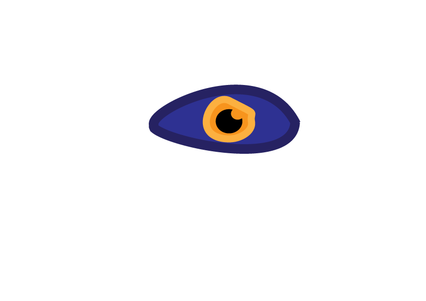

Homework 6 - Emotive Eye
Emotive Eye
Reflection
My emotive eye shows a eye that displays anger and is also fierce. I used a cool color for the outer part of the eye and a warm complimentary color. I used circles and curved lines to create the angry effect. Curving the pupil to make it seem as if something was being looked down on.